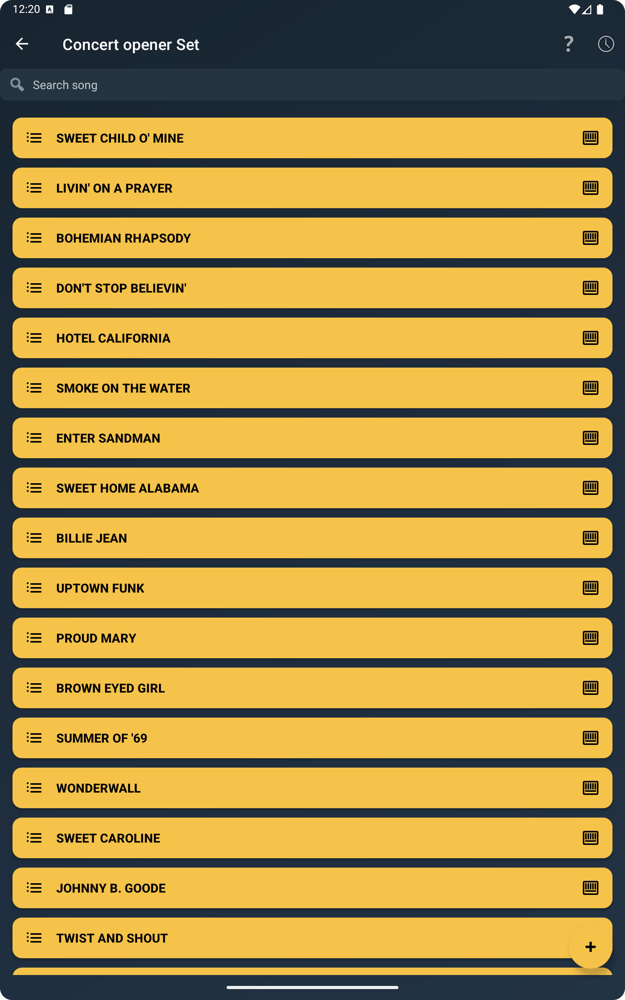

The Real Musician Problem
Many musicians do not lose time because they lack songs. They lose time because songs are scattered. One version is in a notes app, another is a PDF in a messaging thread, another is in a printed folder, and the final running order exists only in someone's memory. That creates friction before rehearsal even starts.
When your material is not organized, simple tasks become slower than they should be. You spend time searching instead of playing, rechecking chords instead of listening, and rebuilding running orders instead of focusing on transitions, dynamics, and cues. A good setlist workflow removes that noise.
Watch this feature in action
This short video shows how the feature works directly inside ChordFlow.
Start from a Clear Repertoire View
The main screen is where organization begins. Instead of treating songs as isolated files, ChordFlow lets you think in terms of working repertoires: one for rehearsal, another for Sunday service, another for acoustic gigs, another for a full band set, and so on.
That matters because musicians rarely work in only one context. The same song may be useful in different situations, but the way you prepare for those situations is not always the same. Keeping repertoires separated helps you think clearly about what belongs where.

Why Song Order Matters More Than People Think
A setlist is not just a storage list. It is a sequence. In rehearsal, order affects how efficiently the group moves between songs. In live use, order affects how quickly you recover after a pause, a last-minute change, or a spoken transition. The clearer the order, the less mental energy you waste.
ChordFlow helps because you can keep the songs in the order that makes sense for the moment rather than relying on memory or a separate note. That is useful when you want one repertoire for preparation and a slightly different one for performance. It is also useful when the band leader changes the flow at the last minute and you need to reorient quickly.
A Practical Workflow for Rehearsals and Live Preparation
A practical way to work is to separate song management into stages. First, collect the songs that belong to a given context. Second, arrange them in the order you actually expect to use. Third, open the songs that need harmonic review and confirm the structure before rehearsal starts.
Inside the song list, this becomes much easier because you can search, sort, and review the songs from one place. That means less jumping between apps and fewer moments where the rehearsal stops because someone cannot find the right chart.

If you prepare different repertoires for different situations, the list view becomes even more valuable. You can keep one set focused on songs to practice, another on songs ready for performance, and another on material still being reviewed. That makes the app useful not only on stage, but throughout the week.
Checking Chords Without Breaking the Flow
Organization is not only about titles and order. It also matters when you need to confirm harmony quickly. A musician who is arranging a set often needs to glance at a shape, confirm a voicing, or remember how a progression sits under the fingers. If that requires switching to another app, the workflow becomes fragmented again.
ChordFlow helps by keeping chord access close to the songs themselves. That is especially useful when preparing rehearsals because chord checking becomes part of the same working session rather than a separate task.
Before the screenshot below, it helps to think of chord checking as preparation support. You are not just reading a title list; you are making sure the repertoire is playable and ready.

The same logic applies if you work from keys or voicings on piano. During preparation, even a quick confirmation can save a stop-and-start rehearsal later.

Examples of Real Use
A solo musician may keep one repertoire for wedding ceremony songs, another for reception standards, and another for regular practice material. A worship team player may separate weekly sets from a wider song library. A band can keep one working list for songs being arranged and another for songs already stage-ready.
In all of these situations, the goal is the same: reduce search time, keep the running order visible, and make the musical information easy to reach. That is what turns a list of songs into a usable working system.
FAQ
Can I organize different setlists for different situations?
Yes. That is one of the most practical ways to use ChordFlow. You can keep separate repertoires for rehearsals, live performance, different bands, or different projects.
Can I reorder songs easily?
Yes. The value of a setlist is not only which songs it contains, but also the order in which you need them. Keeping that order clear makes rehearsals and live use much smoother.
Can I check chords while preparing a setlist?
Yes. ChordFlow lets you keep harmonic reference close to the songs, which helps when reviewing a repertoire before rehearsal or performance.
Related Reading
Keep Your Rehearsal Material Ready
If your songs are easier to find, easier to order, and easier to review, rehearsals become more focused and live preparation becomes less stressful. ChordFlow helps you keep everything in one working flow, so you spend less time managing files and more time actually playing.